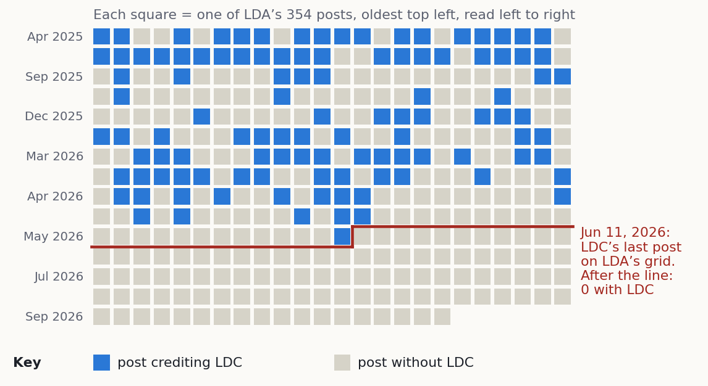
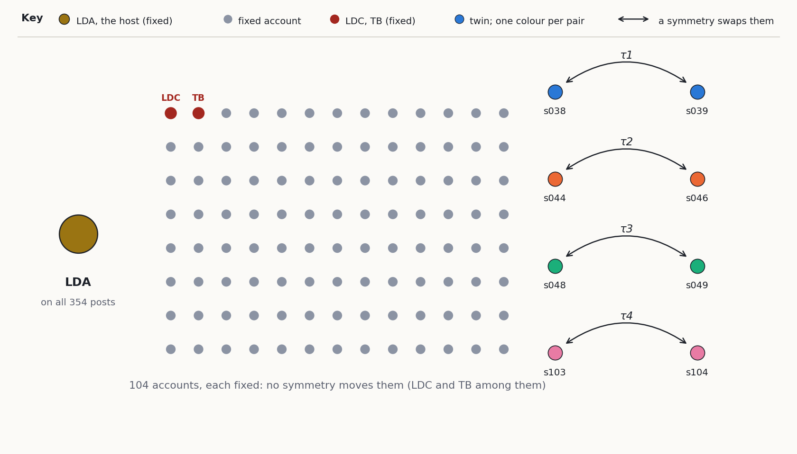

Two names, one grid
latterdaychad was on latterdayavenger’s very first Instagram post, and on 109 of the first 253. Since Jun 11, 2026: 101 posts, none with him.
1. latterdaychad on latterdayavenger’s grid
Below, LDA = latterdayavenger, LDC = latterdaychad, TB = timballard89. Every other account is a label (s001–s110).

LDC didn’t stop posting. Our capture of LDC’s own grid has 132 posts after Jun 11, 2026, up to Oct 7. 2 of them credit LDA, and neither of those is on LDA’s grid:
| LDC post crediting LDA | Date | On LDA’s grid? |
|---|---|---|
DXxQucECReT | Apr 30, 2026 | no |
DX2QReKGCI5 | May 2, 2026 | no |
DYYCz6ShubB | May 15, 2026 | yes |
DZdKHo2vfYT | Jun 11, 2026 | yes |
DZhyyyZJkjE | Jun 13, 2026 | no |
DZkfWDOxsnR | Jun 14, 2026 | no |
2. The grid as a structure: 16 symmetries

TB is credited on 7 of LDA’s posts. 6 of them also credit LDC (the group posts of Who went first):
| Post | Date | LDC credited too? |
|---|---|---|
DU5tCKGAQDQ | Feb 18, 2026 | yes |
DU_DpXzgafm | Feb 20, 2026 | yes |
DVC61j0gVvk | Feb 21, 2026 | yes |
DVMDNEjgf3v | Feb 25, 2026 | yes |
DWhOINgDwip | Mar 30, 2026 | yes |
DW99EnrgVYo | Apr 10, 2026 | yes |
DYYPGYThbql | May 15, 2026 | no |
3. Hypothesis (not tested)
Nothing on this page tests it. What would: when each account was made, each one’s first post, and whether LDA’s world after June 11 lines up with LDC’s before it (same partners, same kinds of posts).
4. Data and how to check it
All files: data/congruence/ (README, SHA256SUMS). Plain Python 3, no packages:
python3 build_matrix.py posts.csv python3 verify_automorphisms.py incidence_matrix.csv python3 refine.py incidence_matrix.csv
Limits: this is LDA’s view of the network; credits are not two-way. A symmetry says nothing about who runs an account. Dates on this page are Pacific time; the CSV files use UTC, so a late-evening post can be a day later there.